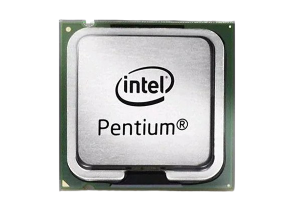

Procesadores de 32 bits
Los procesadores de 32 bits fueron una revolución en su época, permitiendo el manejo de hasta 4 GB de memoria RAM y siendo la base de muchos sistemas operativos y aplicaciones en los años 90 y principios de los 2000.

Características principales
- Arquitectura: Basada en registros de 32 bits, lo que limita el direccionamiento de memoria a 4 GB.
- Compatibilidad: Ampliamente compatible con software antiguo y sistemas operativos como Windows XP.
- Eficiencia: Menor consumo de energía en comparación con los primeros procesadores de 64 bits.
- Uso: Aún utilizado en dispositivos embebidos y sistemas legacy.
Procesadores relevantes de 32 bits
Algunos de los procesadores de 32 bits más icónicos incluyen:
- Intel 80386: Uno de los primeros procesadores de 32 bits, lanzado en 1985.
- Intel 80486: Mejoró el rendimiento y la eficiencia, popular en PCs de los 90.
- Intel Pentium: Introdujo arquitectura superescalar, revolucionando el mercado.
- AMD Am386: Competidor directo del Intel 80386, con mejor rendimiento.
- AMD Am486: Ofreció una alternativa económica al Intel 80486.
- ARMv7: Arquitectura de 32 bits ampliamente utilizada en dispositivos móviles.
- Motorola 68000: Usado en computadoras como la Apple Macintosh y consolas como la Sega Genesis.
- DEC Alpha 21064: Aunque principalmente de 64 bits, tenía modos de 32 bits.
- MIPS R2000: Usado en estaciones de trabajo y sistemas embebidos.
- PowerPC 601: Desarrollado por IBM, Motorola y Apple, usado en Macs antiguas.
Diferencias entre procesadores de 32 y 64 bits
A continuación, se presenta una tabla comparativa más detallada entre procesadores de 32 bits y 64 bits:
| Característica | 32 bits | 64 bits |
|---|---|---|
| Memoria direccionable | Hasta 4 GB | Hasta 16 EB (Exabytes) |
| Registros | 32 bits | 64 bits |
| Compatibilidad | Solo software de 32 bits | Software de 32 y 64 bits |
| Rendimiento en aplicaciones modernas | Limitado | Optimizado |
| Uso en sistemas operativos | Windows XP, Linux antiguo | Windows 10/11, Linux moderno, macOS |
| Seguridad | Menor protección contra exploits | Mayor protección (ej: DEP, ASLR) |
| Uso en dispositivos | Dispositivos embebidos, sistemas legacy | Computadoras modernas, servidores, móviles |
| Consumo de energía | Menor | Mayor (depende del modelo) |
| Costo | Más económico | Más costoso |
Explora más
Si deseas conocer más sobre otros componentes, visita las siguientes páginas: